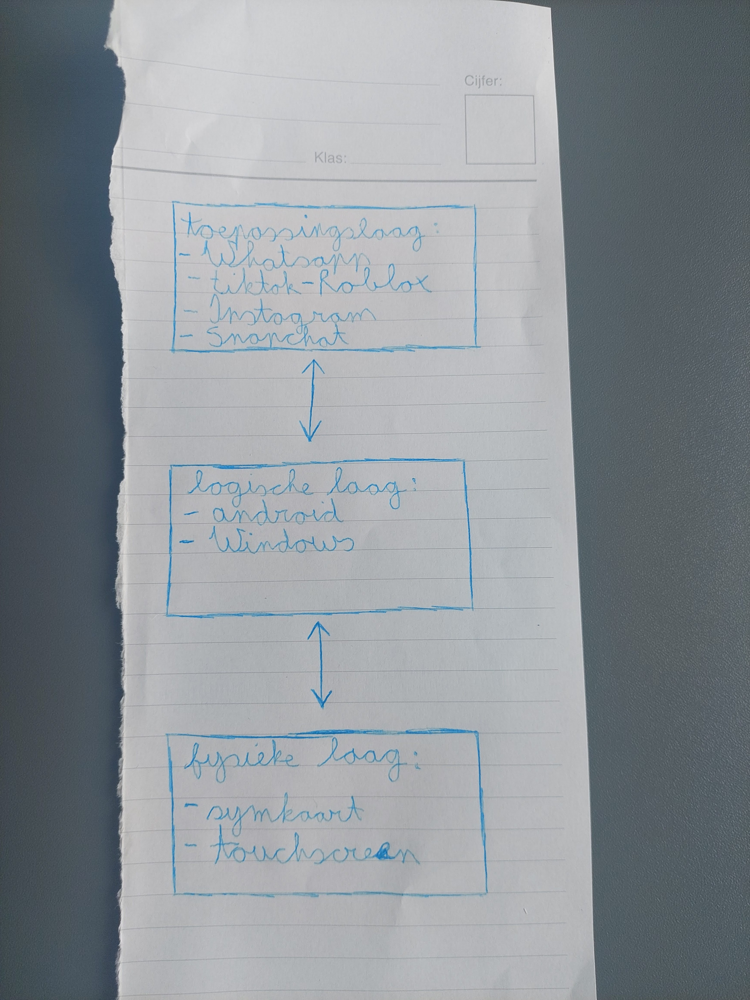

Het drielagenmodel laat op een gemakkelijke manier zien hoe een computer in elkaar zit. Elke laag leg ik appart uit en die kan je vinden in het menu. Op de foto kan je een korte samenvatting zien van het model, maar als je meer uitleg wilt over het drielagenmodel in het algemeen kan je het filmpje bekijken die daaronder staat.
